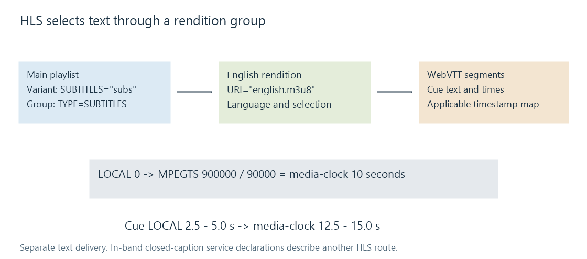

Subtitles in HLS
HLS can deliver separately selected WebVTT subtitle renditions whose cue times must be mapped to the shared media timeline.
HLS can deliver subtitles separately from video and audio. In the WebVTT route, the presentation's main playlist identifies subtitle renditions, and each chosen rendition has its own media playlist and subtitle segments.
This keeps selection separate from video pixels. A viewer can choose a language while continuing to use a compatible video rendition.
The playlist connects the choices
Here is an illustrative main-playlist excerpt, not a complete playable presentation:
#EXT-X-MEDIA:TYPE=SUBTITLES,GROUP-ID="subs",NAME="English",LANGUAGE="en",AUTOSELECT=YES,DEFAULT=YES,URI="english.m3u8"
#EXT-X-STREAM-INF:BANDWIDTH=2400000,SUBTITLES="subs"
video.m3u8
The SUBTITLES attribute links the video variant to the group named subs. The URI on the media entry points to that subtitle rendition's playlist. NAME is a displayed identifier; LANGUAGE describes its language. They are not its cue text.
Those attributes help a client select a rendition. They do not remove its need to read the subtitle format or synchronize the cues.

Map the cue clock to the media clock
RFC 8216 defines an X-TIMESTAMP-MAP header for WebVTT synchronization. It relates a WebVTT local time to an MPEG-2/PES timestamp on a 90,000-tick-per-second scale.
Take this original WebVTT segment example:
WEBVTT
X-TIMESTAMP-MAP=LOCAL:00:00:00.000,MPEGTS:900000
00:00:02.500 --> 00:00:05.000
The platform is empty.
The mapping makes local zero correspond to 900,000/90,000 = 10 seconds on the media clock. The cue therefore corresponds to media time 12.5 through 15 seconds.
mapped time = MPEGTS / 90000 + (cue time − LOCAL)
start = 900000 / 90000 + (2.5 − 0) = 12.5 s
end = 900000 / 90000 + (5.0 − 0) = 15.0 s
The shared media timeline can itself have an origin relative to a player's programme time. The map is a relationship between clocks, not necessarily a claim that the movie began at timestamp zero.
RFC 8216 recommends providing this map in the WebVTT header. Without it, its specified fallback maps WebVTT zero to MPEG timestamp zero. An application that assumes a different origin can produce a constant timing error even when every cue timestamp parses correctly.
A cue can span a segment boundary
Suppose a cue is active from programme time 5.5 to 7 seconds, while two subtitle segments cover 0–6 and 6–12.
The cue is relevant to both segment intervals. RFC 8216 requires a WebVTT segment to include the cues needed during its interval with their complete display times, even when part of a cue extends outside that segment.
It should not become two independently authored sentences whose times were arbitrarily clipped to 6 seconds. Correct assembly and presentation avoid a gap, duplicate display or reset at the boundary.
A segment with no active cues is a legitimate interval without subtitles. It is different from a missing segment that should have supplied a caption.
Long-running streams can cross timestamp wrap
The MPEG/PES timestamp count is 33 bits. Its raw value wraps after 2³³ ticks, about 26.5 hours on the 90 kHz scale. Cue clocks and other timeline values do not necessarily wrap at the same point.
For a teaching example, the local-zero mapping is one second before wrap, at 2³³ − 90,000. A cue two seconds later belongs at the unwrapped count 2³³ + 90,000, although its raw 33-bit value is 90,000.
Subtracting raw values without the appropriate cycle relationship would turn a nearby later cue into an apparently remote earlier one. A client needs wrap-aware synchronization and the applicable discontinuity/timeline context.
Separate subtitles and in-band caption services
HLS uses TYPE=SUBTITLES for a separately described subtitle rendition. A TYPE=CLOSED-CAPTIONS entry instead identifies a service carried in media, such as a supported caption channel or digital service. It does not supply a separate WebVTT playlist URI.
For an Emby route using HLS, identify the actual subtitle delivery selected by that route. Compatible video can be retained while text is delivered separately or converted into an accepted representation. Another route may incorporate subtitles into video, in which case the separate language playlist is no longer the mechanism producing the visible lettering.